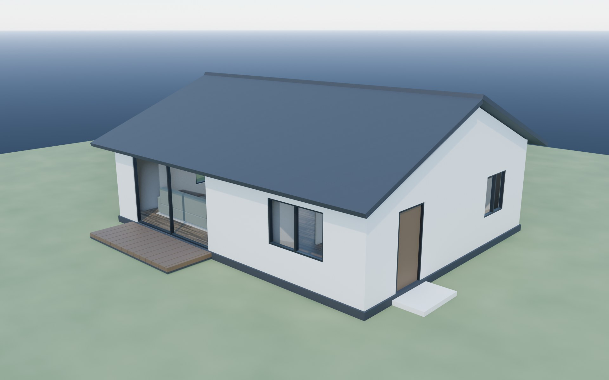
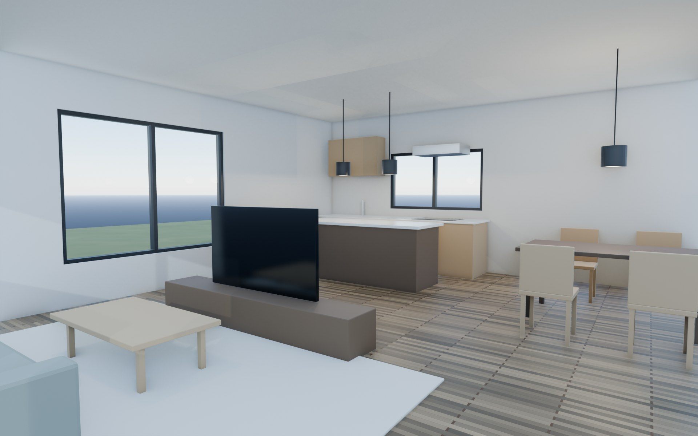

間取りデータからの完全プロシージャル住宅生成検証
— 平屋LDK（外観・内観）
使用したプロンプト
PROMPT
Blender連携で住宅モデリングに関連して、Fable5でしか試せないことを試したい
※ 参考画像・外部アセットを一切使わない検証。間取り（部屋割り・開口部の寸法リスト）を唯一の情報源とするPythonコードをAIが設計し、壁・建具・屋根・家具・照明・マテリアルまでを一括生成した。壁の開口とサッシが同一の数値から作られるため、構造的にズレが生じないのが特徴。
結果（レンダリング）


生成データ
10×8m
建物規模（平屋・天井高2.7m）
162
生成オブジェクト数
16
マテリアル（全ノード生成）
10
開口部（窓7・ドア3）
0
外部アセット
Fable 5
使用モデル
AIによる自己検証・修正ログ
生成後、AIがビューポートのスクリーンショットを読み取って不具合を発見し、シーンへのレイキャスト（光線判定）で原因を物理的に特定して修正した。
- 天井際に黒い帯が出る — レイキャストで正体を特定。屋根のSolidifyモディファイアが面法線の向きにより下向きに厚みを付け、屋根裏が室内側へ突き出していた。厚み方向を反転して解消。
- 屋根の妻側に白い筋 — 妻壁の上端が屋根下面と完全に同一平面となりZファイティングが発生。妻壁を3cm下げて解消。
- 太陽光が効いていないように見える — 診断の結果ライト自体は正常で、影が建物の裏（北東）へ落ちる方位だったことが原因と判明。太陽をカメラ側の南東へ回して解消。
アプローチの特徴
- 間取りの単一ソース化 — 部屋割り・開口寸法を数値リストで定義し全要素を導出
- 壁ビルダー関数 — 開口を避けて壁セグメントを自動分割生成
- 建具の自動整合 — サッシ・ガラス・ドアが開口と同じ数値から生成されズレない
- 全プロシージャルマテリアル — 板張りフローリング含め16種をシェーダーノードで構築
- LDK造作一式 — アイランドキッチン・ダイニング・ソファ・ペンダント3灯（実ライト付き）
- 日本語UI環境への対応 — ローカライズされたノード名を型検索で回避